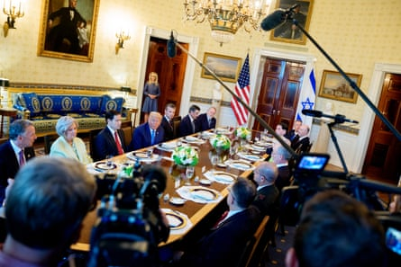

Benjamin Netanyahu told Donald Trump that he would nominate him for the Nobel peace prize on Monday, as the two leaders met for the first time since the US launched strikes on Iran’s nuclear program as part of a short-lived war between Israel and Iran.
Trump was expected to press Netanyahu to agree to a ceasefire in Israel’s 21-month-old war against Hamas in Gaza amid an outcry over the humanitarian cost of an offensive that has led to nearly 60,000 deaths, most of them Palestinian.
Israeli and Hamas negotiators met for indirect talks for the first time in six weeks in Qatar on Monday. While both sides have spoken positively about the prospects for a ceasefire , a number of crucial negotiating points remain including guarantees from the Israeli side that the war would not continue and Netanyahu’s insistence that Hamas be banished from Gaza for good.
Before a dinner in the Blue Room at the White House, Trump was asked whether he believed that Palestinians should be forcibly removed from Gaza, amid reports that Israel has laid out plans to force all Palestinians in Gaza into a camp on the ruins of Rafah – a plan that has been criticised as a blueprint for ethnic cleansing . Trump directed Netanyahu to answer the question.
“It’s called free choice,” said Netanyahu, who is wanted by the international criminal court for alleged war crimes relating to the Gaza war. “You know, if people want to stay, they can stay, but if they want to leave, they should be able to leave.”
“It shouldn’t a prison,” Netanyahu said. “It should be an open place and give people a free choice. We’re working with the United States very closely about finding countries that will seek to realize what they always say they wanted – to give the Palestinians a better future. And … I think we’re getting close to finding several countries.”
At the beginning of the meeting, Netanyahu presented Trump with a letter that he said he had sent to a committee for the Nobel peace prize commending Trump’s efforts to end conflicts in the Middle East.
Trump is hosting Netanyahu to discuss a potential ceasefire agreement to end the fighting in Gaza.Photograph: Andrew Harnik/Getty Images
“I want to express the appreciation and admiration not only of all Israelis, but of the Jewish people,” Netanyahu said before presenting the letter. “You deserve it,” Netanyahu added.
“Coming from you in particular, this is very meaningful,” Trump said.
It was the second high-profile nomination for the president: last month Pakistan said it would recommend Trump for the prize.
During the meeting, Trump also said that he “hoped” that the US would not strike Iran again.
“They want to work something out,” he said. “They’re very different now than they were two weeks ago.”
He declined to give a date for upcoming talks with Iran, but told reporters they would find out more details tomorrow.
Asked about Russia’s war in Ukraine, Trump suggested that he would resume weapons shipments to the Ukrainian army, although the White House had recently confirmed it had halted some weapons deliveries due to a Pentagon review of dwindling US munitions stocks.
In impromptu remarks, Trump said he was “not happy with president Putin at all.” “I’m disappointed, frankly, that President Putin hasn’t stopped,” he said. “I’m not happy about it.”
“We’re going to send some more weapons” to Ukraine, he continued. “We have to. They have to be able to defend themselves. They’re getting hit very hard now. They’re getting hit very hard. We’re going to have to send more weapons.”
Trump claimed during the meeting that Hamas “want to meet and they want to have that ceasefire.” But he did not share any additional details on preparations for a ceasefire, and when asked about a two-state solution with the Palestinians, directed the question to Netanyahu, who repeated Israeli insistences that they would maintain a “security guarantee” over territories like the Gaza Strip.
“I think the Palestinians should have all the powers to govern themselves, but none of the powers to threaten us,” Netanyahu said. “And that means that certain powers like overall security will always remain in our hands.”
“I think we can work out a peace between us and the entire Middle East with President Trump’s leadership and by working together,” he continued. “I think we can establish a very, very broad piece that will include all our neighbours.”
Before departing for Washington on Sunday, Netanyahu said he was confident a deal could be achieved and that Israeli negotiators had been given clear instructions to achieve a ceasefire – but only with conditions that Israel has already agreed.
Sources in the prime minister’s entourage described the talks in Qatar as positive, according to Israel’s military radio station and an Israeli official quoted by Reuters. Palestinian officials were more downbeat and said initial meetings on Sunday had ended inconclusively.
Netanyahu had met with Middle East envoy Steve Witkoff and secretary of state Marco Rubio earlier on Monday. He is expected to remain in Washington to meet with vice-president JD Vance and senior officials, including house speaker Mike Johnson.